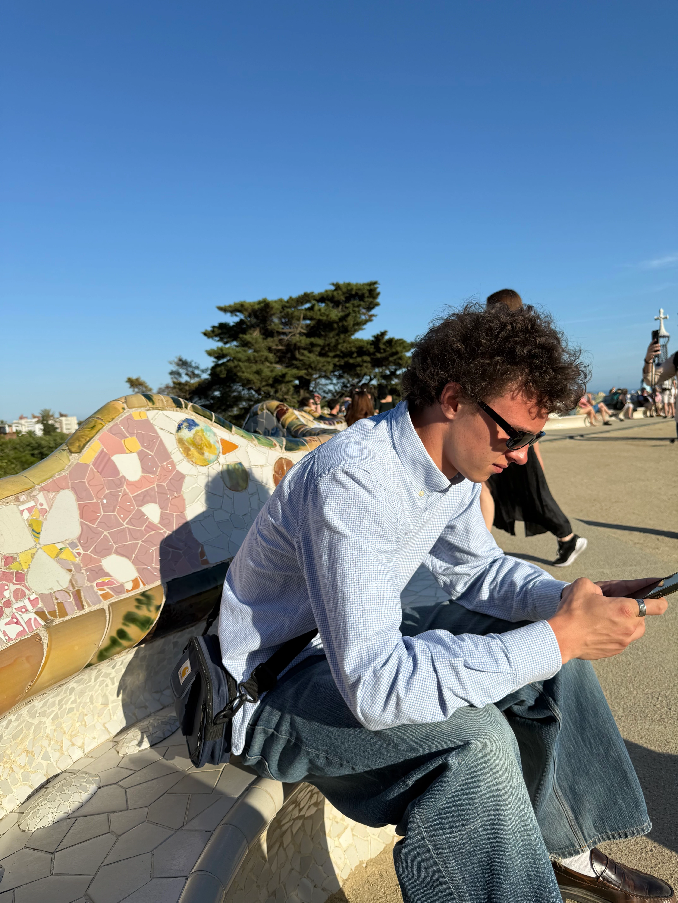

Port
Folio.
Heyy, og velkommen til min portfolio hjemmeside. Her vil du kunne gå på opdagelse og udforske de
temaer
og opgaver jeg har været igennem på 1 semester på multimediedesign.
Jeg har her, samlet alle mine projekter, hvor du både kan kan se mine færdige resultater og læse
lidt om
de ting jeg har lært.
Klik under for at se mine projekter
